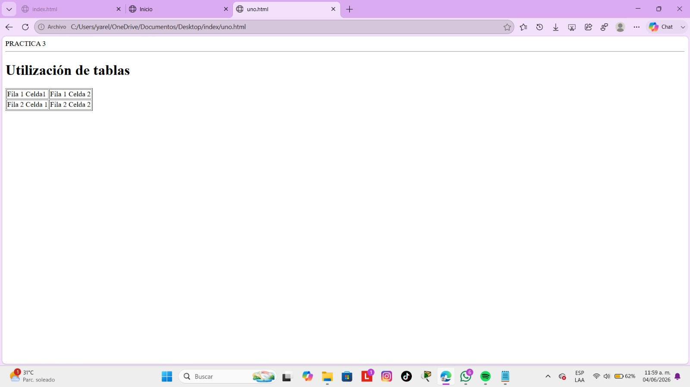

table crea la tabla, tr crea una fila, td crea una celda de datos y th crea una celda de encabezado.
Volver al inicio
rowspan hace que la celda ocupe varias filas y colspan hace que una celda ocupe varias columnas.
Volver al inicio
cellspacing establece la distancia entre celdas, bgcolor cambia el color de fondo de la tabla, bordercolor cambia el color de los bordes de la tabla y border define el grosor del borde.
Volver al inicio